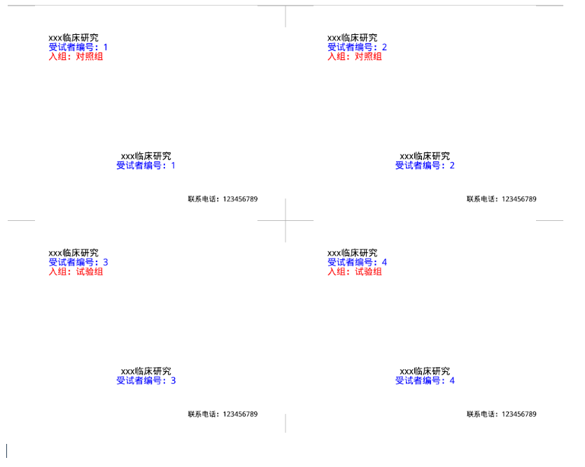
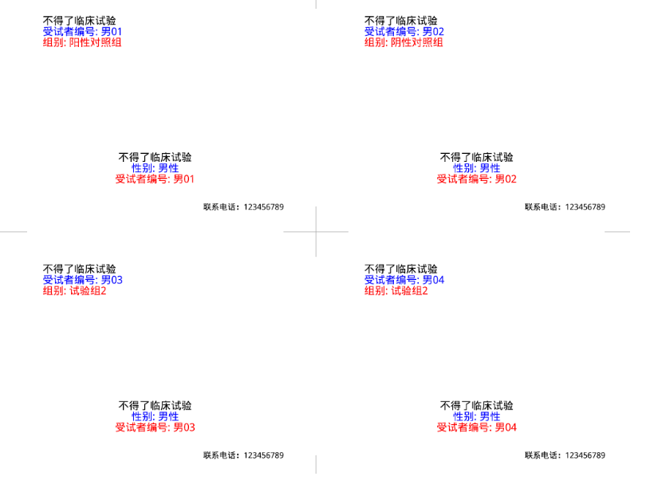

id <- c(1:30)
group <- rep(c("试验组","对照组"),15)
rand <- sample(group, 30, replace = T)
(res <- cbind(id, group))
## id group
## [1,] "1" "试验组"
## [2,] "2" "对照组"
## [3,] "3" "试验组"
## [4,] "4" "对照组"
## [5,] "5" "试验组"
## [6,] "6" "对照组"
## [7,] "7" "试验组"
## [8,] "8" "对照组"
## [9,] "9" "试验组"
## [10,] "10" "对照组"
## [11,] "11" "试验组"
## [12,] "12" "对照组"
## [13,] "13" "试验组"
## [14,] "14" "对照组"
## [15,] "15" "试验组"
## [16,] "16" "对照组"
## [17,] "17" "试验组"
## [18,] "18" "对照组"
## [19,] "19" "试验组"
## [20,] "20" "对照组"
## [21,] "21" "试验组"
## [22,] "22" "对照组"
## [23,] "23" "试验组"
## [24,] "24" "对照组"
## [25,] "25" "试验组"
## [26,] "26" "对照组"
## [27,] "27" "试验组"
## [28,] "28" "对照组"
## [29,] "29" "试验组"
## [30,] "30" "对照组"9 随机分组
随机分组在临床设计中太常见了，只要你搞临床研究，必定会遇到随机分组的问题。
随机分组临床比较常用的也就是4种： - 简单随机simple randomization - 区组随机blocked randomization - 分层随机stratified randomization - 整群随机cluster randomization - ……
当然还有其他种类，关于随机分组问题，我推荐大家看医咖会的这篇文章：10篇文章全面了解随机分组，赶快收藏！
本文主要介绍如何使用R语言完成随机分组。
简单随机（simple randomization）又称为完全随机，是最简单的一种随机分组方法。医学统计学中经常会遇到完全随机设计的xxx，指的就是简单随机分组！
比如来一个病人，就抛一次硬币，根据正反面随机决定进入试验组还是对照组。不过实际操作起来没有这么随便，大家都是通过随机数字表法或者软件进行简单随机分组的。道理都是差不多的。
假如需要收100个受试者，随机分为试验组和对照组，那么可以根据患者入组顺序，每人给一个编号，然后从随机数字表任意的某一行某一列开始，抽取随机数字，100个受试者有100个随机数，把这100个随机数按照从小到大排序，前50个进入试验组，后50个进入对照组（还有按照余数，奇偶数等，都可以）。
上述方法通过SPSS可以实现，大家可以参考这篇文章：SPSS实现简单随机分组
根据这个思路，R语言也是可以实现的。R语言在临床研究设计中的使用非常成熟，在cran task views中有两个专题都是关于研究设计的，大家感兴趣的可以自己去看一看哦。
9.1 简单随机
比如30个人，按照完全随机化的方法分为2组，一组试验组，一组对照组，每组15人。
我们也可以通过randomizr这个包实现，没安装的需要先安装。
install.packages("randomizr")“抛硬币”式的简单随机分组通过simple_ra()函数实现：
library(randomizr)
# 100人分2组
sim <- simple_ra(100, num_arms = 2, conditions = c("试验组","对照组"))
sim
## [1] 试验组 对照组 对照组 对照组 对照组 对照组 试验组 试验组 试验组 对照组
## [11] 对照组 试验组 对照组 对照组 试验组 试验组 试验组 对照组 对照组 对照组
## [21] 试验组 对照组 对照组 对照组 对照组 对照组 对照组 试验组 试验组 对照组
## [31] 对照组 对照组 对照组 对照组 试验组 试验组 试验组 对照组 试验组 对照组
## [41] 试验组 试验组 对照组 对照组 试验组 对照组 对照组 试验组 对照组 对照组
## [51] 对照组 对照组 对照组 对照组 试验组 试验组 对照组 对照组 对照组 对照组
## [61] 对照组 试验组 试验组 对照组 试验组 试验组 试验组 试验组 试验组 对照组
## [71] 试验组 对照组 对照组 对照组 对照组 对照组 试验组 对照组 对照组 对照组
## [81] 试验组 试验组 对照组 试验组 对照组 对照组 试验组 对照组 试验组 试验组
## [91] 试验组 对照组 试验组 试验组 对照组 对照组 试验组 试验组 对照组 试验组
## Levels: 试验组 对照组
table(sim)
## sim
## 试验组 对照组
## 42 58但是这种分组最大的问题是组间人数不一样，通常在临床研究设计中都是1:1的，我们可以使用另一个函数解决这个问题。
com <- complete_ra(100, num_arms = 2, conditions = c("试验组","对照组"))
com
## [1] 对照组 对照组 试验组 对照组 试验组 对照组 试验组 试验组 试验组 试验组
## [11] 对照组 对照组 试验组 对照组 试验组 对照组 对照组 试验组 试验组 对照组
## [21] 试验组 对照组 对照组 试验组 对照组 对照组 对照组 对照组 试验组 试验组
## [31] 试验组 对照组 试验组 试验组 对照组 对照组 对照组 对照组 对照组 对照组
## [41] 试验组 试验组 对照组 对照组 试验组 试验组 对照组 试验组 对照组 对照组
## [51] 对照组 试验组 对照组 试验组 对照组 试验组 对照组 对照组 对照组 试验组
## [61] 试验组 试验组 试验组 试验组 试验组 对照组 试验组 对照组 试验组 对照组
## [71] 对照组 试验组 对照组 对照组 试验组 试验组 对照组 试验组 试验组 试验组
## [81] 对照组 试验组 对照组 试验组 对照组 试验组 试验组 试验组 试验组 试验组
## [91] 试验组 对照组 对照组 试验组 对照组 对照组 对照组 试验组 试验组 对照组
## Levels: 试验组 对照组
table(com)
## com
## 试验组 对照组
## 50 50完美解决组间人数不相等问题。
网络上的大神也给出了自己编写的函数：https://shumchi.github.io/Randomization/
simple_random <- function(size, grp = 2, T_2_C = "1:1"){
set.seed(20210412)
id_num <- seq(1, size, 1)
random_seq <- runif(n = size, min = 0, max = 1)
int_rank <- rank(random_seq)
ratio_T <- as.numeric(substr(T_2_C, 1, 1))
ratio_C <- as.numeric(substr(T_2_C, 3, 3))
if (grp == 2) {
group <- ifelse(int_rank <= size/(ratio_T + ratio_C), "T", "C")
} else if (grp > 3) {
group <- cut(int_rank, breaks = grp, labels = paste("Group", 1:grp))
}
df <- data.frame("ID" = id_num, "RandomNum" = random_seq,
"Rank" = int_rank, "Group" = group)
#write.csv(df, "simple randomization table.csv", row.names = FALSE)
return(df)
}20个人随机分组：
simple_random(20)
## ID RandomNum Rank Group
## 1 1 0.83237492 19 C
## 2 2 0.95522177 20 C
## 3 3 0.59787880 10 T
## 4 4 0.35076793 4 T
## 5 5 0.43157421 6 T
## 6 6 0.63326323 13 C
## 7 7 0.78015581 17 C
## 8 8 0.46990952 7 T
## 9 9 0.38535395 5 T
## 10 10 0.63361183 14 C
## 11 11 0.73655082 15 C
## 12 12 0.49675139 8 T
## 13 13 0.61201021 11 C
## 14 14 0.23511285 3 T
## 15 15 0.52894214 9 T
## 16 16 0.04290597 1 T
## 17 17 0.74367251 16 C
## 18 18 0.79647582 18 C
## 19 19 0.62653890 12 C
## 20 20 0.22537775 2 T除此之外，还有非常多的R包可以实现随机分组，包括但不限于简单随机分组/区组随机/分层随机等。
9.2 区组随机
可以用randomizr实现区组随机：
# Load built-in dataset
data(HairEyeColor)
HairEyeColor <- data.frame(HairEyeColor)
# Transform so each row is a subject
# Columns describe subject's hair color, eye color, and gender
hec <- HairEyeColor[rep(1:nrow(HairEyeColor),
times = HairEyeColor$Freq), 1:3]
N <- nrow(hec)
# Fix the rownames
rownames(hec) <- NULL
dim(hec)
## [1] 592 3
head(hec)
## Hair Eye Sex
## 1 Black Brown Male
## 2 Black Brown Male
## 3 Black Brown Male
## 4 Black Brown Male
## 5 Black Brown Male
## 6 Black Brown Male根据毛发颜色进入不同的区组，然后再分为3组：
Z <- block_ra(blocks = hec$Hair, conditions = c("Control", "Placebo", "Treatment"))
table(Z, hec$Hair)
##
## Z Black Brown Red Blond
## Control 36 95 24 42
## Placebo 36 96 23 42
## Treatment 36 95 24 43可以自由控制入组数量：
sort(unique(hec$Hair))
## [1] Black Brown Red Blond
## Levels: Black Brown Red Blond
block_m_each <- rbind(c(78, 30),
c(186, 100),
c(51, 20),
c(87,40))
block_m_each
## [,1] [,2]
## [1,] 78 30
## [2,] 186 100
## [3,] 51 20
## [4,] 87 40
Z <- block_ra(blocks = hec$Hair, block_m_each = block_m_each)
table(Z, hec$Hair)
##
## Z Black Brown Red Blond
## 0 78 186 51 87
## 1 30 100 20 40但是这个区组随机对于临床研究来说不是很适用，因为这里的情况需要提前准备好所有的受试者，然后在进行分组，而对于临床研究来说，受试者是一个一个来的，不是一下子全部到齐的，所以block_ra()可能更适合动物实验或者基础研究的分组。更多关于区组随机的知识，大家可以参考医咖会的这篇文章：一文详解区组随机化，包教包懂！
临床研究的随机分组可以通过blockrand包实现，特别适合一次招募1人的临床研究！
比如100人随机分为2组每组50人：
library(blockrand)
set.seed(111)
res <- blockrand(n=100, num.levels = 2, levels = c("试验组","对照组"))
head(res)
## id block.id block.size treatment
## 1 1 1 4 试验组
## 2 2 1 4 对照组
## 3 3 1 4 试验组
## 4 4 1 4 对照组
## 5 5 2 6 试验组
## 6 6 2 6 试验组
table(res$treatment)
##
## 对照组 试验组
## 51 51还可以顺便帮我们生成PDF文件，方便装入信封。
showtext::showtext_auto(enable = T)
plotblockrand(res,file = "res.pdf",
top = list(text=c("xxx临床研究","受试者编号：%ID%","入组：%TREAT%"),
col=c("black","blue","red"),
font=c(2,2,4)
),
middle=list(text=c("xxx临床研究","受试者编号：%ID%"),
col=c("black","blue","red"),
font=c(2,2,4)
),
bottom="联系电话：123456789",
cut.marks=TRUE # 裁剪标记
)
9.3 分层随机
比如120个受试者分成4组，试验组1，试验组2，阳性对照组，阴性对照组，每组30人，并且根据性别进行分层（男性和女性），要求男性60例，女性60例。
使用blockrand实现。
library(blockrand)
# 男性60例随机分组
set.seed(123)
res.M <- blockrand(n = 60,
num.levels = 4,
levels = c("试验组1","试验组2","阳性对照组","阴性对照组"),
stratum = "男性",
id.prefix = "男", # id前缀
block.sizes = c(3),
block.prefix = "男" # 前缀
)
table(res.M$treatment)
##
## 试验组1 试验组2 阳性对照组 阴性对照组
## 15 15 15 15
# 女性60例随机分组
set.seed(456)
res.F <- blockrand(n = 60,
num.levels = 4,
levels = c("试验组1","试验组2","阳性对照组","阴性对照组"),
stratum = "女性",
id.prefix = "女", # id前缀
block.sizes = c(3),
block.prefix = "女" # 前缀
)
table(res.F$treatment)
##
## 试验组1 试验组2 阳性对照组 阴性对照组
## 15 15 15 15
# 结果合并即可
res <- cbind(res.M,res.F)
dim(res)
## [1] 60 10
head(res)
## id stratum block.id block.size treatment id stratum block.id block.size
## 1 男01 男性 男1 12 阳性对照组 女01 女性 女1 12
## 2 男02 男性 男1 12 阴性对照组 女02 女性 女1 12
## 3 男03 男性 男1 12 试验组2 女03 女性 女1 12
## 4 男04 男性 男1 12 试验组2 女04 女性 女1 12
## 5 男05 男性 男1 12 试验组2 女05 女性 女1 12
## 6 男06 男性 男1 12 阳性对照组 女06 女性 女1 12
## treatment
## 1 试验组1
## 2 阳性对照组
## 3 试验组2
## 4 阴性对照组
## 5 阴性对照组
## 6 阳性对照组写入PDF文件，方便制作信封，分组隐匿：
showtext::showtext_auto(enable = T)
plotblockrand(res, file = "res1.pdf",
top=list(text=c("不得了临床试验","受试者编号: %ID%","组别: %TREAT%"),
col=c('black','blue','red'),font=c(2,2,4)),
middle=list(text=c("不得了临床试验","性别: %STRAT%","受试者编号: %ID%"),
col=c('black','blue','red'),font=c(1,2,3)),
bottom="联系电话：123456789",
cut.marks=TRUE
)